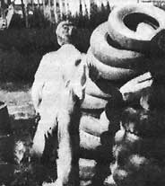
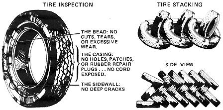

You really can earn over $100 a day recycling old tires in almost any populated section of North America," says Washington State's Bob Stevenson. "I've been doing it for years in a number of different cities as far east as Lansing, Michigan and as far north as Saskatoon, Saskatchewan. And, contrary to what you probably believe, you don't need a truck to get into this business, the work is not heavy, and there are plenty of old tires lying around just waiting for you to pick them up!"
I've gotten so many good, practical ideas from MOTHER that I now feel it only fair to tell other readers about my own part-time moneymaker. I pick up old tires for free . . . and then sell almost all that I collect for anywhere from $1.00 to $40 each! What's more, I've been doing this since I was in high school, I've worked this little side business in a number of cities around the U.S. and Canada as I've gone to college and been transferred by the Air Force, and I believe that nearly anyone can do as well as or better than I've done with this grassroots enterprise. It's an especially good venture for a back-to-the-land husband and wife team.
Quite simply, my part-time enterprise consists of nothing but collecting castoff, used tires from gas stations and tire dealers and then selling them to retreading shops. That may sound too simple to you . . . but the idea works for me, it works for hundreds of other people all over the U.S. and Canada, and I don't think you'll find it too difficult to make it work for you.
Pull out the telephone book (or books) for your town, nearest city, and/or other metropolitan centers in your area and make a list of the names and addresses printed under "Tire Retreading" in the Yellow Pages. Then call around to find out which recapping shop within easy driving distance will pay you the most for the tires you collect. I average $1.00 to $1.50 for every good passenger tire casing I sell and up to $40 (that's forty dollars!) or more for large truck tire casings.
While you're on the phone, ask each shop you talk to if it has any restrictions on the type or number of tires you bring in. Some retreaders, for instance, won't take steelbelted radials . . . others simply aren't set up to handle some sizes of casings ... and still other recappers have a definitely limited capacity. (Still, there always seems to be at least one shop in every area that will buy all the tires you can collect. I recently asked a spokesman for one of these companies if his firm would be interested in 1,000 tires and he said, "Bring 'em right in!")
Late summer and early fall is the busiest time of the year for retreaders. This is the season when they begin working on their winter "snow-caps" and during-say-August, September, and October, many shops stockpile used casings for this coming business. You may even find that some recappers will pay you a little more per tire during this period.
This is the part that's easier than it sounds. There's hardly a gas station in the country, which sells tires, that doesn't have at least 10 and sometimes 50 or more old casings stacked up out back somewhere with the trash. Frequently, the owners and managers of service stations have to pay a premium to have these discarded rubber carcasses hauled away.
And that's where you come in. Just go around to the stations, garages, and tire dealers in your area and tell them you'll tote their old tires away for free. And that should be all you have to do to line up as many of the casings as you want to handle!
To date-and I've been doing this for years-I haven't had a single gas station owner or tire dealer refuse to let me have his old carcasses. In fact, the closest I've ever come to being turned down was once when I told a station manager what I was going to do with the casings (I always tell the truth when asked), and he said he just believed he'd haul the old tires to the retreader himself. But then, as I was leaving, he called me back and said, "On second thought, I can't be bothered. Take 'em on in."
So remember: You're performing a valuable service when you haul away for free the discards that service stations and tire dealers would otherwise have to spend good money to dispose of. Never, never pay for the tires you collect. There's no need to. Tens of thousands of casings are cluttering up thousands of garages all over your state right now. The people who have these carcasses are anxious to get rid of them. In the few cases when I've been asked if I intended to buy the discards I wanted to haul away, I've always said "no" ... and I've ended up being given the old tires anyway.
As a matter of fact, if anyone nixes your picking up a particular assortment of runout tires from a service station ... it'll probably be you. The government has recently tightened its safety standards for recaps and, if you're smart, you won't want to waste your time collecting and hauling casings that retread shops can't use. Basically, there are four things you should keep an eye peeled for as you inspect a garage's discards:
[1] A tire's bead (the part that mounts directly on a wheel's rim) must have no cuts, tears, or excessive wear.
[2] There can be no holes in the casing ... not even a small puncture that has been repaired with patches or rubber plugs.
[3] There must be no tire cords (the string-like threads or bands embedded in the rubber) showing.
[4] Small surface cracks are usually OK, but there can be no deep cracks in a carcass's sidewalls.
These may sound like fairly high standards for a castoff tire, but you'll probably find that most of the discards you inspect will measure up (after all, they were providing satisfactory service right up until the time they were replaced). If you're in any way unsure of your ability to spot a good, retreadable casing . . . just drop by the recapping shop you'll be working with and have one of the inspectors there give you a quick lesson in what to look for.
Obviously, the more tires you haul to your retreader at once, the less trips you'll have to make. This cuts down on gas, oil, and other overhead costs . .. drastically shaves the amount of time it takes to move casings from your sources to the recapper . . . and, in general, increases the profitability of your operation.
There's no need, though, to plunge into this business by rushing out and buying the biggest truck with the biggest built-up bed you can find. You can quite adequately test the potential of a tire salvaging enterprise with just about any vehicle that will carry five or more old carcasses.
When I started all I had was a station wagon and, by tying a few casings on its roof rack, I could load it with-at most-15 or 20 discards. Later-after we'd sold the wagon-we rented a trailer for about $6.00 a day, pulled it around with a Volkswagen (!), and just collected tires on Saturdays. And still later, we bought an old 1954 half-ton truck for $250, built an extended rack on its bed, and found the homebrewed rig to be just right for our part-time operation. We've never deemed it necessary to go to the built-up two-ton and even bigger trucks that some full-time casing recyclers use.
Now all you have to do is take your tires to the retreader and collect your money. If the shop isn't too busy and you don't have too many of the casings, an inspector will often check over the carcasses while you wait. Frequently, though, you'll be issued a receipt and told to drop by or phone later to find out how many of the tires were accepted.
Don't be too discouraged with the results of the first few loads you haul in. In spite of how well you think you've inspected the casings, it's a good bet that a fourth to a third of them will be rejected. Relax. As you gain experience, you'll be able to reduce your percentage of dis cards until virtually every carcass you deliver will be a "good one".
Some capping shops will pay you directly in cash, others will issue an immediate check, and still others (usually the ones that are a branch of a bigger operation) will mail your check to you (sometimes from another office).
An important tip: Keep track of your expenses. Although your income is taxable, you can deduct all the gas, oil, etc., bills that you run up while scouting out, collecting, and hauling the tires you handle. Keep a record of the miles you drive as well as any receipts that might be helpful at tax time.
You'll find you can pack more tires into your truck or trailer if you "herringbone" stack them as shown in one of the illustrations that accompany this article.
Tell your retread shop you don't want any of the casings back that aren't accepted. This'll save you the expense of hauling them to the dump.
You can always collect a few of the ca r casses on your way home from work, while running an errand to the store, etc. You don't have to make a special trip to get them.
If you live far out in the country or a long way from your recapping shop, it may well be worth your while to go into town once a week or so and spend the whole day on your tire recycling operation.
Once you really get into the swing of this business, you can even set up your own regular collection route. Just make arrangements with a number of service stations to pick up their old casings every week or two (plan your schedule, of course, so that it's most convenient for everyone involved).
If you have the storage space, you'll probably be dollars ahead in the long run if you stockpile the discards you collect through the spring and summer . .. and then sell them all in the fall, when demand for the casings is highest.
Whenever you've collected enough old tires to make it worthwhile, you may be able to talk a retreader into sending a truck to your place to pick up a whole load of the carcasses at his expense.
You'll be amazed at how good some of the discarded tires you handle will be . . . many are hardly worn at all and still have thousands of miles of service left in them. There's nothing wrong with carefully inspecting some of them, saving them out, and using them on your own vehicles. Then, when they really are worn out, you can sell them to your recapped
I've been collecting old tires from service stations and recycling them to retreading shops for a long time now and I keep on doing it because I've never found-for me, at least-an easier or a better way to make good money on a part-time basis.
I like the idea of being able to work this little enterprise on an "any time and for as long as I want" basis. I also like the fact that I can net $100 a day or more nearly any time I choose to operate my part-time business. (That's based on collecting only 100 recappable tires in a day ... and, believe it or not, my brother and I once picked up over 360 good casings in just somewhat more than two hours! Once you're organized, you should find 100 a day a snap.)
And, finally, I like the fact that I can work my little entrepreneurial venture by myself any time I want . . . or, if I feel like it, with someone else. As I've just mentioned, I've operated the business with my brother at some times and, at others, with my wife. And, as I stated at the beginning of this article, I feel that this is an especially good little moneymaker for a back-to-the-land husband and wife team.
And that pretty well describes my lady and me right now. We've set our goal (a move to the country) and our tire recycling business is helping us realize it. And, maybe, that's the part I like best of all about our mini-enterprise: We're [1] building a better life for ourselves by [2] solving a "pollution" problem for service stations while [3] recycling and helping to stretch the useful life of tiresthat would otherwise be burned or thrown in the dump. We feel good about every aspect of our business.
Years ago, a Kansas wheat farmer named L.F. Schumacher began to draw big royalties from the gas and oil leases he sold on his land. And with some of that money, he set up an office in Meade, Kansas. And in front of tht office, he had a cocoa mat for people to wipe their feet on.
Well sir, one night somebody stole that mat. So ole L.F. thought about that for a few days and then he bolted a knife to one of his tractors and he pulled an old tire around past that knife and-slick as a whistle-sliced the tire into two strips. And that worked so well that L.F. experimented some more and, within a few months, he'd applied for a patent on a machine that nearly anybody could use to slice old tires into long strips and then assemble those strips into floor mats.
One thing led to another after that, as always happen when somone comes up with a really worthwhile new idea, and Schuhmacher moved to Chicago and set up a firm called S.& S. Patents, Inc. And, according to some 1968 letters that L.F. wrote to one of MOTHER's editors, more than 1,700 little shops had been set up at that time to use S. & S. equipment to turn old worn-out tires into shop, atheletic, and horse trailer mats. A great many of these little enterprises were netting $5,000 to $6,000 a month for private operators. And the rest of the recycling mini-factories were providing useful jobs for the disadvantaged at sheltered workshops, missions, halfway houses, and other such public service institutions.
We had fond hopes of giving a big, fat, free plug to S. & S. Patents, Inc., in this space because we like the idea of recycling even unrecappable tires into useful items (especially if there's the chance that MOTHER's readers might be able to get in on the action and have yet another shot at setting up even more little businesses that might finance even more moves to the self-reliant way of life).
But, for the past three or four years, we simply haven't been able to track S. & S. Patents, Inc., down anywhere. The company doesn't seem to be at its old Chicago address, its old phone number has been given to a private family, and-in general-S. & S. seems to have evaporated without a trace. We're guessing that L.F. finally passed away and his company was either liquidated or sold to someone else (and, if sold, moved to another town).
So: Who's going to come to the rescue of MOTHER and her readers? Who out there knows if the S. & S. machines are still being manufactured? Who knows where we might find a used one? Who knows of a shop happily engaged in the manufacture of floor mats from old, discarded, unrecappable tires? Who can give us any leads at all on this subject? -The Editors.
|
 Modest Bob Stevenson sorts 14-inch tires from 15 inchers . |
 |
|